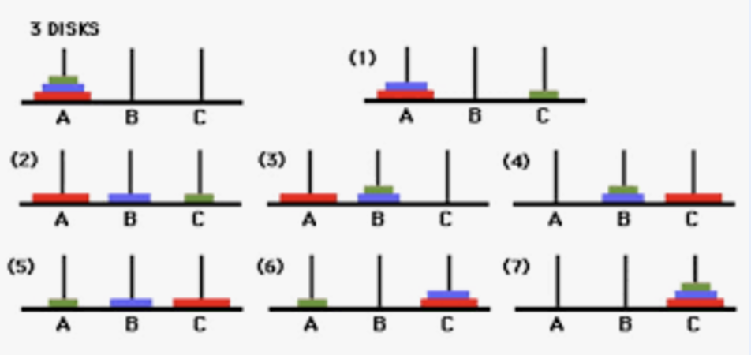
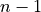

Recurrence Relations (Advanced)¶
The first three sections provide a flavor of recurrence relations. We pick up the thread on distributions from other sections in the fourth section on Stirling number.
Tower of Hanoi¶
The image below shows a classic problem where there are three pegs and a certain number of discs with distinct sizes (diameters). The discs are initially sitting on the first peg ordered by size. No disc is sitting above a disc that is smaller than its size. The objective is to move this stack of discs to the third peg following two rules: 1) Only one disc can be moved at a time, and 2) A disc can only be placed onto an empty peg, or onto a larger disc. What is the least number of moves required to move a stack with  discs?
discs?
{kind=link}
If there is only 1 disc, the move can be done in one step. We will denote this by .
If there are only 2 discs, we will first move to the top small disc from peg A to peg B, then move the bottom large disc from peg A to peg C, and finally move the small disc from peg B to peg C. So we need moves.
{kind=link}
Note, even though we are highlighting the peg names, the whole idea is to move the disc stack to another peg using a third peg as a temporary holding place. In the general case, it does not matter if larger discs are already present on some pegs. The top of the stack consisting of two discs can still be moved using the same algorithm irrespective of if larger discs are already present on other pegs.
Now, suppose there are 3 discs. We can move the stack of the top two discs to peg B using the recipe for 2 discs, move the largest of the 3 discs from peg A to peg C, and then move the 2 disc stack from peg B to peg C, again using the two disc recipe.
{kind=link}
Thus, .
In fact, for any , . We can move the stack of the top discs to peg B, then move the largest disc from peg A to peg C, and finally move the stack of the :math”n discs from peg B to peg C.
Thus, we can compute T(2) from T(1), T(3) from T(2), T(4) from T(3), and so on using our formula without actually thinking about all the moves. Such formulas that are applied successively are called recurrence relations.
There are ways to solve such a formula and get explicit non-recursive answers. For example, the tower of Hanoi formula gives
.
However, in this section, we do not worry about how to solve such recurrence relations. We are just highlighting the fact that such recurrence relations can be derived and successive application of such recurrence relations allows one to calculate counts for small arguments.
Fibonacci Sequence¶
Another well-known recurrence relation is for the Fibonacci problem. The details of the problem can be read at this link.
This results in the following recurrence relation:
Combinations¶
In our discussion of basic combinatorics, we learnt that the number of ways of choosing  objects from distinguishable objects is given by .
objects from distinguishable objects is given by .
We could make this choice in another way. Consider one of the objects. There are two mutually exclusive possibilities. Either this object is chosen or the object is not chosen. If the object is chosen, then we only need to choose the remaining objects from  objects. If the object is not chosen, then we need to choose the objects from objects. Thus, applying the addition principle (corresponding to the or between the mutually exclusive events),
This formula is known as Pascal’s rule.
Note that for any . There is only one way of not choosing any object or choosing all the objects. For other , can be obtained using the Pascal’s rule recursively.
More details about the application of Pascal’s formula can be found here.
Stirling Number¶
In our discussion of the inclusion-exclusion principle , we had come across the following problem:
In how many ways can 12 distinguishable presents be given to three people such that every person gets at least one present and all the presents are given out?
We then encountered a variant of this problem in stones and sticks principle.
In how many ways can 12 indistinguishable presents be given to three people such that every person gets at least one present and all the presents are given out?
Here we study the third variant where the presents are distinguishable, but the receivers of the presents are not. Replace the persons receiving with indistinguishable robots. Alternatively, we frame an equivalent problem.
In how many ways can 12 people sit at 3 tables if the tables can be considered indistinguishable, no table is empty, and every person sits at one of the tables? In other words, only the combination of people matters; the exact table they are sitting at does not matter for counting configurations. This number is denoted by and is known as the Stirling number (of the second kind).
If tables can be empty, then the problem becomes one of finding .
This problem can be solved by using a recurrence relation.
Consider one of the 12 people. Either this person sits by himself at a table or shares the table with other people. If the person sits by himself, the other 11 people have to sit at 2 tables. Thus, the number of configurations for this case is . However, if the person shares the table, then we first let the other people first sit at the 3 tables such that no table is empty (this can be done in ways , and then add this person to one of the 3 tables (this can be done in 3 ways). Hence, .
For as there everyone has to sit at the only table available. For as there are more tables than people. For as if there are same number of people as tables, there can be only one person per table to ensure that no table is empty.
In general (for ):
This successive recursion becomes cumbersome for large numbers. Let us calculate this for a manageable case.